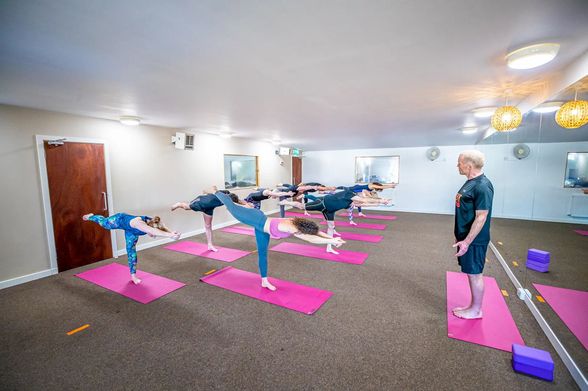

Strength
- Warm-up. Marching and gentle mobility
- Strength. Sitting to standing, lifting a light weight from the floor, rows, presses and carrying
- Balance. One leg by the wall, heel-to-toe
- Cool-down. Unhurried stretch
Strong Bones is for women after menopause who want to look after their bones, muscles and balance. Cool, unhurried strength training in the gym and yoga for balance upstairs, in a group of no more than six.
Next cycle starts the week of 9 November. Or text Helen on 07718 339510

Strong Bones is one of our six-week groups. It meets twice a week, once downstairs in the gym and once upstairs in the studio, with up to 6 people so Helen gets to know everyone. It runs in six-week cycles all year: the next starts the week of 9 November, and the one after that in January 2027 date. When your six weeks are up, you can carry on into the next cycle or move into any class on our regular timetable.
Helen starts with very light weights and builds up slowly, watching how you move all the way. Strength training is one of the best things you can do for your bones. If you've been diagnosed, check with your GP or physio before you start, and tell Helen about any limits they've given you so she can plan around them.
No. Both sessions are unheated.
No more than six, so Helen can watch everyone closely.
Daytime, during school hours. Exact times are being confirmed now. Check the timetable page, or text Helen and she'll let you know.
No. The groups run in six-week cycles all year. The next cycle starts the week of 9 November, and the one after that in January 2027. You can join at the start of any cycle, and carry on from one to the next.
Fill in the short form to save your place, and Helen will confirm the times and how to pay. Or text Helen and she'll answer any questions first.
Looking for something else? See all our classes, from hot yoga to TRX, or one-to-one sessions with Helen.